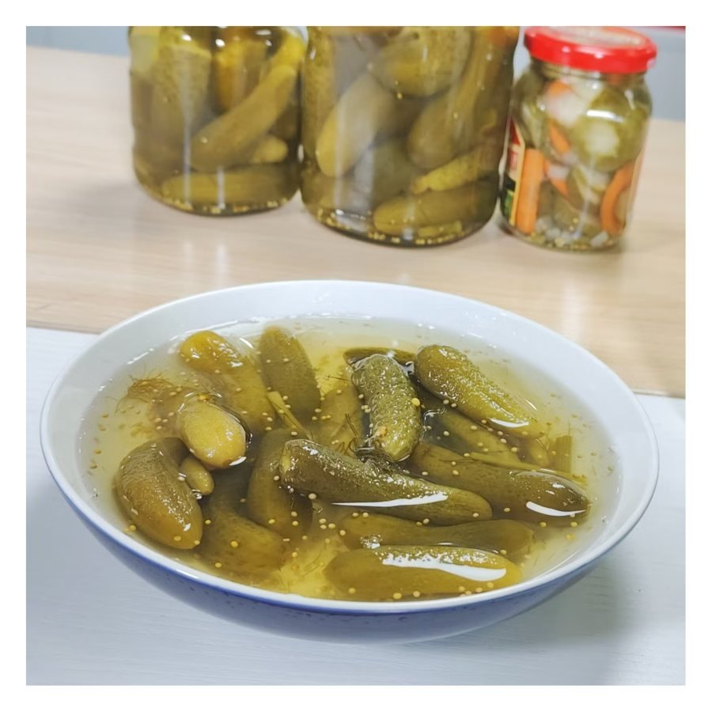

食品与便利食品
红烧牛肉味方便面 （袋装, 约105克）
袋装牛肉味方便面，工地快捷热食，只需热水冲泡。
袋装牛肉味方便面，适合没有厨房的工地快速热食，只需热水即可。
技术参数
| 单袋重量 | 85-105 g |
|---|---|
| 口味 | 牛肉（红烧） |
| 冲泡方式 | 约 3 min，用沸水冲泡 |
| 包装 | 单袋（薄膜），外箱 24-30 件 |
| 过敏原 | 麸质（小麦）、大豆，依据LMIV附件II |
| 海关编码（HS） | 190230 |
欧盟标准与法规
VO (EG) 178/2002食品法通则与可追溯性VO (EU) 1169/2011食品信息标签法规（LMIV），标签与过敏原VO (EG) 852/2004食品卫生（HACCP）VO (EG) 1333/2008食品添加剂VO (EG) 396/2005农药及环氧乙烷残留最大限量VO (EU) 2017/625官方管控
搭配产品
本类别其他产品
茉莉绿茶 （散装）
米饼 （仙贝风味），袋装
即饮茶饮料 （PET瓶装, 500毫升）500毫升PET瓶装即饮茶饮料，用于工地饮品供应。
茉莉香米 （白色长粒米），5-25公斤袋装袋装白色长粒香米，用于工地后勤、食堂及再分装。
瓶装饮用水 （无气, PET瓶0.5升）0.5升PET瓶装无气饮用水，用于工地团队的饮水供应。
三合一速溶咖啡 （条装/袋装）由咖啡、乳制品成分和白糖调配的速溶咖啡，适用于休息室、工地茶水间和食堂。
茉莉龙珠 （手工卷制绿茶, 100克罐装/袋装）以嫩芽手工卷制、用茉莉花窨制的茶珠：高于散装茉莉绿茶的高端款。

罐装切块番茄 400克

醋渍小黄瓜 （玻璃罐）醋渍迷你黄瓜3–6厘米，400–850克玻璃罐。

番茄酱 （500克PET挤压瓶）
巧克力威化棒 （夹心），整箱夹心巧克力/榛子威化棒，独立包装。
甜红椒粉，散装 （60–260 ASTA色价）按ASTA色价分级的红椒粉，按吨供货。
云南阿拉比卡烘焙咖啡豆
玉米片 （筒装）
筒装薯片 （160克）